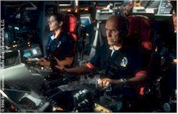
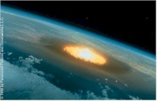

Contents | Features | Reviews | News | Archives | Store |
 |
|
| Movie Credits | Buy It! |
Deep Impact
Review by Elias Savada
Posted 8 May 1998
| Directed by Mimi Leder. Starring
Robert Duvall, Tea Leoni, Screenplay by Michael Tolkin and Bruce Joel Rubin. |
Scientists the other day announced the detection of the brightest cosmic explosion ever in human history. At approximately the same time this reviewer detected the dimmest megadud of the summer. For all the money ($80 million) spent on this early mid-year entry, all you, the viewer, get is Dull Impact. Actually, I was playing with No Impact, Low Impact, etc., and by the end of opening weekend (when this film will undoubtedly be atop the box-office gross chart thanks to distributor Paramount Pictures' marketing blitz), you'll hear a ton more. Yeah, it's the first blockbuster of the summer season out of the gate, but this pony will pull up lame and won't finish the race. Place your bets elsewhere (Armageddon, Godzilla, and – my sleeper pick – The Truman Show). Deep Impact gives new meaning to the phrase "disaster film."
This lame tale of impending mass destruction – a loose retelling of Meteor
(1979) and When Worlds Collide (1951) – by award-winning scripters Michael
Tolkin (The Rapture, The Player) and Bruce Joel Rubin (Ghost) waits way too long
before the effects kick in. It aimlessly shifts focus from one lethargic character to
another as numerous residents of the threatened planet Hollywood prepare for doomsday,
presumably by watching MSNBC and trying to get their mucked up lives in order. Subplots
abound to fill the tedious moments ahead. You have the newsroom antics surrounding
aspiring newswoman Jenny Lerner (Tea Leoni) tracking down a supposed extra-marital scandal
involving a deposed cabinet member of President Tom Beck (Morgan Freeman). As the perky
reporter stumbles into the realization that it's actually an extra-terrestrial affair,
Jenny also is trying to come to grips with the shenanigans of her dysfunctional and
divorced mom and dad (Vanessa Redgrave and Maximilian Schell). Meanwhile in the Northern
Virginia suburbs outside DC, amateur astronomer Leo Beiderman (discoverer of the comet
heading you know where) pines for high school sweetheart Sarah Hotchner (Leelee Sobieski)
in the weeks leading up to the "big day."
waits way too long
before the effects kick in. It aimlessly shifts focus from one lethargic character to
another as numerous residents of the threatened planet Hollywood prepare for doomsday,
presumably by watching MSNBC and trying to get their mucked up lives in order. Subplots
abound to fill the tedious moments ahead. You have the newsroom antics surrounding
aspiring newswoman Jenny Lerner (Tea Leoni) tracking down a supposed extra-marital scandal
involving a deposed cabinet member of President Tom Beck (Morgan Freeman). As the perky
reporter stumbles into the realization that it's actually an extra-terrestrial affair,
Jenny also is trying to come to grips with the shenanigans of her dysfunctional and
divorced mom and dad (Vanessa Redgrave and Maximilian Schell). Meanwhile in the Northern
Virginia suburbs outside DC, amateur astronomer Leo Beiderman (discoverer of the comet
heading you know where) pines for high school sweetheart Sarah Hotchner (Leelee Sobieski)
in the weeks leading up to the "big day."
The Nation's Capital, regrettably, rises from the rubble at film's end. The government, recognizing that mankind is doomed, finally makes a bold and, of course, secret, decision to save one million Americans in caves carved out of the limestone beneath Kansas City. Think about how well our politicians keep secrets and then start laughing at how preposterous this sounds. Most of the people to be saved will be selected in a lottery, with anyone over 50 ineligible. Whoa, expect AARP to set up their pickets early.
Then there's poor, Sturgeon Tanner (Robert Duvall) brought out of retirement to pilot the good ship Messiah on a last ditch comet-bound effort to stop the seven-mile-wide, bazillion-ton space rock from its earthly rendezvous. His younger (dare I say new age) crew's heroics merely play off the manipulative hand of director Mimi (The Peacekeeper) Leder, providing a two-hankie moment nearly two hours into the film. Based on how I expect this film to crash and burn, Executive Producer Steven Spielberg may demote Leder back to the small screen, where she first gained recognition for some fine work on ER. In the latest issue of Starlog, the director talks about getting the right emotions from her cast. "It would have been easy to just let the comet take the lead and make this into a stereotypical disaster movie. But I went into this film trying to combine vastly different emotions."
Well, I went looking for those emotions as I sat down to watch this film. It's like playing Where's Waldo, trying to discover the feelings Leder describes as being present. They're there somewhere, but damned if I can find them. Actually, here's another metaphor. If Deep Impact were a patient in an episode of that aforementioned Thursday night hospital drama ... the diagnosis would read cometose.
If this is an event picture, it takes it's own sweet time getting down to the dirty deed, and viewers won't take kindly to the delayed arrival. Al Jolson once said that "There isn't anything on earth so obstinate and perverse as an audience." I can hear their invectives fluttering about the theater as the film drags along toward it's ultimate destiny – a quick appearance at your local video store. We filmgoers want to be entranced like we were watching Independence Day, not bored out of our gourd. Even repeated cable viewings of last year's Volcano are more watchable that this over-blown endeavor.
Comic moments are few, as expected in a film that takes itself way to seriously. If you blink you'll miss the movie marquee in a crowd scene. Playing at the National There are Fire in the Sky and From Here to Eternity. Gimme a break. Give yourself one and avoid this underwhelming effort.
Contents | Features | Reviews | News | Archives | Store
Copyright © 1999 by Nitrate Productions, Inc. All Rights Reserved.